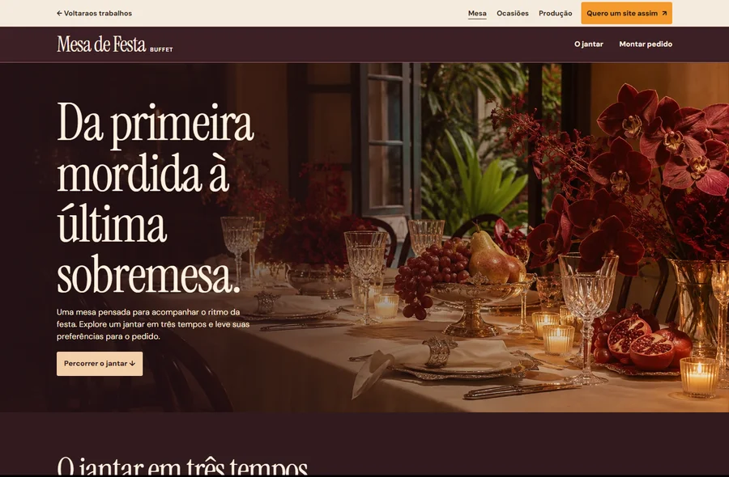
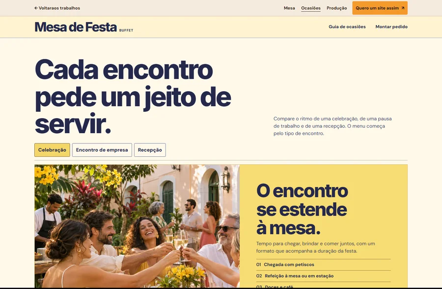
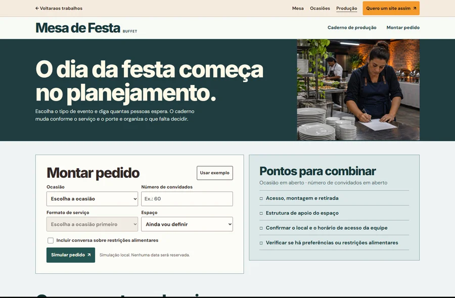

Mesa
Um jantar em três tempos, com fotos, pratos e preferências que vão para o pedido.
Abrir demonstraçãoTrês sites para um buffet. Explore um jantar, compare ocasiões ou monte o caderno de um evento.

Um jantar em três tempos, com fotos, pratos e preferências que vão para o pedido.
Abrir demonstração
Um guia visual que troca o formato e o roteiro conforme a ocasião.
Abrir demonstração
Um caderno que adapta os pontos de produção ao porte do encontro.
Abrir demonstração